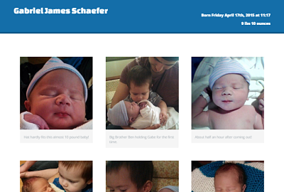

-

Photo Collection of my newborn son to share with my co-wokers. I used a lightbox preview technique using javascript for better photo viewing
-

Website for American Reformed Church of Woodstock, MN. This was my first paid client. The church wanted to have a web presence so that people could look them up and find them online.
-

Project in-progress for current workplace. Department wanted to be able to reach out and let clients know that there is a dedicated team available for contact.